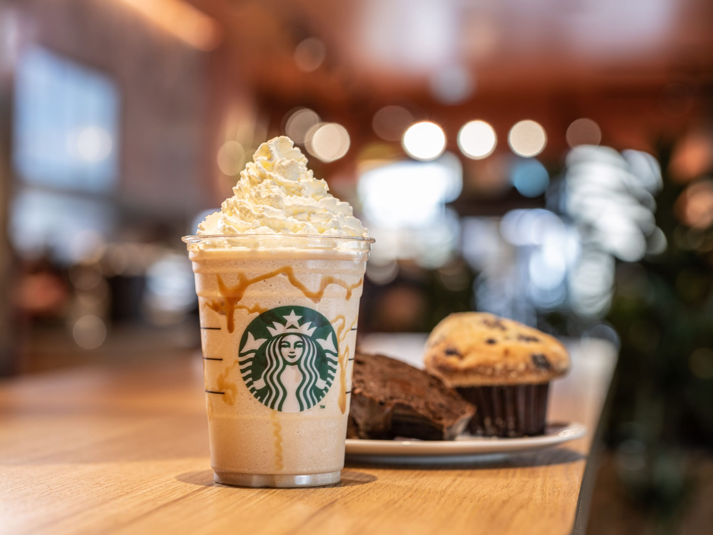

CIBO STARBUCKS

Il caffè di Starbucks.
Preparalo a casa come piace a te.
Un gusto unico come quello di casa. Scopri i nostri caffè Starbucks®
da poter preparare comodamente a casa tua.
Goditi una tazza di caffè 100% Arabica o una bevanda Starbucks®,
quando e come vuoi tu.
I NOSTRI CAFFÈ
Hai trovato il tuo caffè Starbucks® preferito da preparare a casa?
Perché
non conoscere di più il mondo del caffè? Bevi un caffè e goditi i
nostri articoli
sul viaggio del caffè, la sostenibilità e lo
stile di vita.
CHI SIAMO
Scopri cosa rende Starbucks® unico, dal nostro impegno nelle
relazioni
umane, al caffè di qualità, dalle nostre caffetterie accoglienti
ai nostri deliziosi
caffè che puoi gustare comodamente a casa.